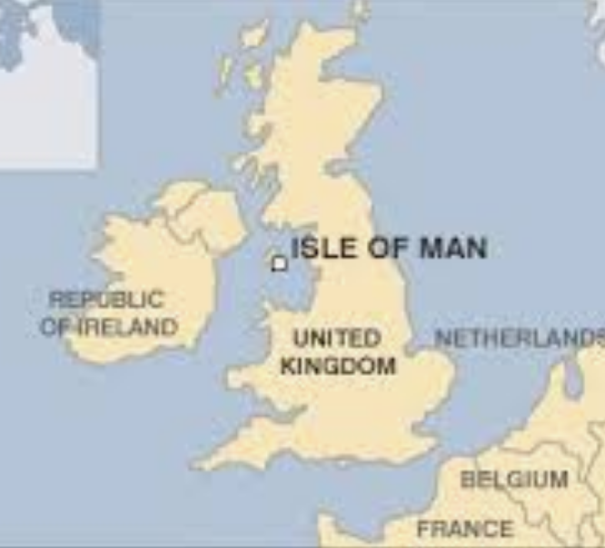
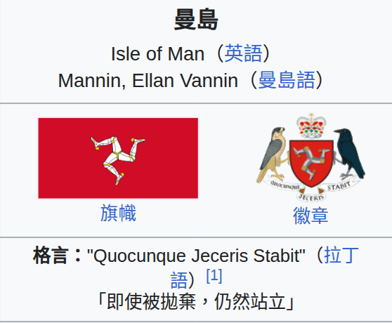
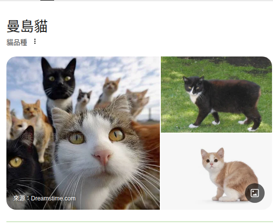
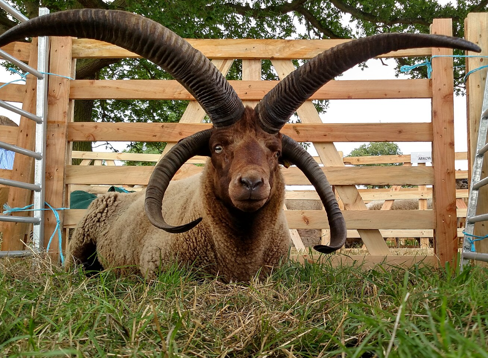

地理及氣候
位於英格蘭與愛爾蘭之間的愛爾蘭海，是英國皇家屬地。
人口與民族：人口約 8.5 萬人。主要民族為曼島人（Manx，具凱爾特與維京血統），佔約 95% 為白人。
地理與氣候：地形以丘陵為主，最高峰為斯內費爾峰。氣候屬溫帶海洋性氣候，溫和濕潤但多風，夏季涼爽、冬季少有嚴寒。

旅遊簡報
簽證：曼島屬於「共同旅行區」(CTA)。持有香港特區護照或台灣護照通常免簽證，但自 2025 年起，入境前須依規定申請 英國電子旅行許可 (ETA)。
貨幣：當地使用曼島鎊 (IMP)，與英鎊 (GBP) 等值。英鎊現金在島上通用，但曼島鎊在英國本土通常無法使用，離開前建議換回英鎊。
交通：島上不屬於英國本土，若從英國搭機或乘船前往須出示身分證件。


曼島拉西大輪
（The Great Laxey Wheel）
位於曼島拉西村的工業奇蹟。
這座建於 1854 年的巨型水車由工程師羅伯特·凱斯門特設計，直徑約 22.1 公尺，是目前世界上仍能運作的最大水車。
在 19 世紀維多利亞時代，它利用水力驅動，以開採鉛、鋅等礦產。
如今，它已成為曼島國家遺產的一部分，遊客可攀登 95 級螺旋梯到達頂端，俯瞰格倫穆爾山谷的壯麗景色。


皮爾城堡（Peel Castle）
坐落於曼島西海岸的聖派翠克島，是一座融合了維京與凱爾特歷史的宏偉遺跡。
這座建於 11 世紀的古堡最初由挪威國王「赤腳王」馬格努斯三世以木材築起，後由紅砂岩改建為石造建築。
城牆內擁有 10 世紀的凱爾特圓塔、聖日耳曼大教堂及神祕的「異教徒女士」墓穴。除了深厚的歷史，這裡也流傳著黑狗靈異傳說，遊客可登上城牆，將愛爾蘭海的壯闊美景與皮爾港盡收眼底。



曼島貓（Manx cat）
這種貓咪源自曼島，其最顯著的特徵是因基因突變而導致沒有尾巴或僅有極短的尾巴。
曼島貓以性格溫馴、冷靜、善於交際且親人而聞名，是非常適合與家庭成員相處的寵物。
曼島四角羊（Manx Loaghtan）
外型特徵：最顯著的標誌是多角，通常為四支角，但偶爾也會出現六支角的情況。牠們的毛色通常呈現深棕色或巧克力色，外觀獨特且具有辨識度。
四角羊是曼島重要的遺產物種，當地民眾與保育機構致力於維護其種群數量。

